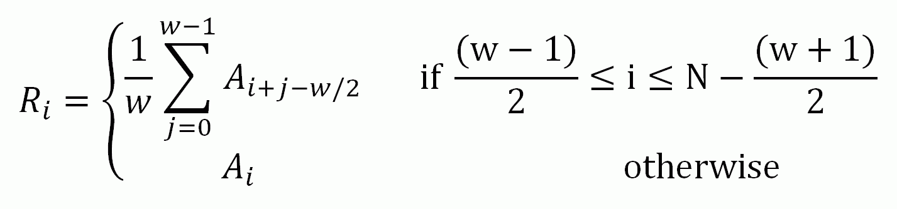

The SMO OTH function returns a copy of Array smoothed with a boxcar average of the specified width. The result has the same type and dimensions as Array . The algorithm used by SMOOTH is:

where N is the number of elements in A.
Result = SMOOTH( Array , Width [, / EDGE_MIRROR ] [, / EDGE_TRUNCATE ] [, / EDGE_WRAP ] [, MISSING = value ] [, / NAN ] )
Returns the smoothed array, which has the same dimensions as the input array.
The array to be smoothed. Array can have any number of dimensions.
See Note on Smoothing Over Large Data Ranges if Array contains data from a very wide range of data values.
The width of the smoothing window. Width can either be a scalar or a vector with length equal to the number of dimensions of Array . If Width is a scalar then the same width is applied for each dimension that has length greater than 1 (dimensions of length 1 are skipped). If Width is a vector, then each element of Width is used to specify the smoothing width for each dimension of Array . Values for Width must be smaller than the corresponding Array dimension. If a Width value is even, then Width +1 will be used instead. The value of Width does not affect the running time of SMOOTH to a great extent.
Note: A Width value of zero or 1 implies no smoothing. However, if the NAN keyword is set, then any NaN values within the Array will be treated as missing data and will be replaced.
Tip: For a multi-dimensional array, set widths to 1 within the Width vector for dimensions that you don't want smoothed.
Note: If none of the EDGE_* keywords are set, the end points are copied from the original array to the result with no smoothing.
Note: Normally, two-dimensional floating-point arrays are smoothed in one pass. If any of the EDGE_* keywords are specified for a two-dimensional floating-point array, the result is obtained in two passes, first for all of the rows, and second for all of the columns. Therefore, the results for points in the interior of the array may differ slightly when any of the EDGE_* keywords are set. This difference will be most pronounced if the array contains NaN values.
Set this keyword to apply the smoothing function to all points. If the neighborhood around a point includes a point outside the array, a "mirrored" edge point is used to compute the smoothed result.
For example, when smoothing an n-element vector with a five-point-wide smoothing window, the second point of the result R 0 is equal to A 0 if no EDGE_* keywords are set, but is equal to (A 1 +A 0 +A 0 +A 1 +A 2 )/5 if the EDGE_MIRROR keyword is set. In the same manner, point R n-1 is set to A n-1 if no EDGE_* keywords are set, or to (A n-3 +A n-2 +A n-1 +A n-1 +A n-2 )/5 if EDGE_MIRROR is set.
Set this keyword to apply the smoothing function to all points. If the neighborhood around a point includes a point outside the array, the nearest edge point is used to compute the smoothed result.
For example, when smoothing an n -element vector with a three-point-wide smoothing window, the first point of the result R 0 is equal to A 0 if no EDGE_* keywords are set, but is equal to (A 0 +A 0 +A 1 )/3 if the EDGE_TRUNCATE keyword is set. In the same manner, point R n-1 is set to A n-1 if no EDGE_* keywords are set, or to (A n-2 +A n-1 +A n-1 )/3 if EDGE_TRUNCATE is set.
Set this keyword to apply the smoothing function to all points. If the neighborhood around a point includes a point outside the array, a "wrapped" edge point is used to compute the smoothed result.
For example, when smoothing an n -element vector with a three-point-wide smoothing window, the first point of the result R 0 is equal to A 0 if no EDGE_* keywords are set, but is equal to (A n-1 +A 0 +A 1 )/3 if the EDGE_WRAP keyword is set. In the same manner, point R n-1 is set to A n-1 if no EDGE_* keywords are set, or to (A n-2 +A n-1 +A 0 )/3 if EDGE_WRAP is set.
The value to return for elements that contain no valid points within the kernel. The default is the IEEE floating-point value NaN. This keyword is only used if the NAN keyword is set.
Set this keyword to cause the routine to check for occurrences of the IEEE floating-point values NaN or Infinity in the input data. Elements with the value NaN or Infinity are treated as missing data. In the Result , missing elements are replaced by the smoothed value of all other valid points within the smoothing window. If all points within the window are missing, then the result at that point is given by the MISSING keyword.
Note: SMOOTH should never be called without the NAN keyword if the input array may possibly contain NaN values.
The smallest resolvable difference between two double-precision numbers is about 10 15 . If your data include numbers that span a large range, such as 1 and 10 15 or greater, numerical roundoff effects will degrade the accuracy of the computation.
For efficiency, SMOOTH computes a running total using the difference between neighboring values, and then divides by the smooth width. Because of this, if the input data contain data representing a range of values larger than 10 15 , the results may not appear symmetric following the large values. For example:
a = [1.0, 1.0, 2.0, 3.0, 4.0, 1.d18, 4.0, 3.0, 2.0, 1.0, 1.0]
PRINT, SMOOTH(a, 3)
IDL Prints:
1.0000000 1.3333333 2.0000000 3.0000000
3.3333333e+017 3.3333333e+017 3.3333333e+017 0.00000000
-1.0000000 -1.6666667 1.0000000
A different way to compute the smoothed array is to use the SHIFT operation, which won’t pollute the downstream values. For example:
a = [1.0, 1.0, 2.0, 3.0, 4.0, 1.d18, 4.0, 3.0, 2.0, 1.0, 1.0]
PRINT, (a+SHIFT(a,-1)+SHIFT(a,1))/3
IDL Prints:
1.0000000 1.3333333 2.0000000 3.0000000
3.3333333e+017 3.3333333e+017 3.3333333e+017 3.0000000
2.0000000 1.3333333 1.0000000
This method has the same roundoff errors as using SMOOTH, and uses more memory, but does give symmetric results.
The following example smoothes a dataset in two different ways.
; Create and display a simple image
data = SIN(DIST(256)/3)
im1 = image(data, LAYOUT=[3,1,1], DIMENSIONS=[768,400], MARGIN=0)
; Display the same dataset smoothed with a width of 9 in each dimension
im2 = image(SMOOTH(data,9), LAYOUT=[3,1,2], /CURRENT, MARGIN=0)
; Smooth only in the vertical direction with a width of 15
im3 = image(SMOOTH(data,[1,15]), LAYOUT=[3,1,3], /CURRENT, MARGIN=0)
The following example smoothes an RGB image with the multidimensional width argument.
; Determine the path to the file.
file = FILEPATH('rose.jpg', $
SUBDIRECTORY = ['examples', 'data'])
; Import in the RGB image from the file.
img = READ_IMAGE(file)
; Display the original image on the top.
im1 = image(img, LAYOUT=[3,2,2], DIMENSIONS=[800,400])
; Smooth the RGB image in just the width dimension.
im2 = image(SMOOTH(img,[1,1,21]), LAYOUT=[3,2,4], /CURRENT)
; Smooth the RGB image in just the height dimension.
im3 = image(SMOOTH(img,[1,21,1]), LAYOUT=[3,2,5], /CURRENT)
; Smooth the RGB image in both the width and height dimensions.
im4 = image(SMOOTH(img,[1,5,5]), LAYOUT=[3,2,6], /CURRENT)
|
Original |
Introduced |
|
8.1 |
Added EDGE_MIRROR and EDGE_WRAP keywords |
DIGITAL_FILTER , LEEFILT , MEDIAN , TS_DIFF , TS_FCAST , TS_SMOOTH